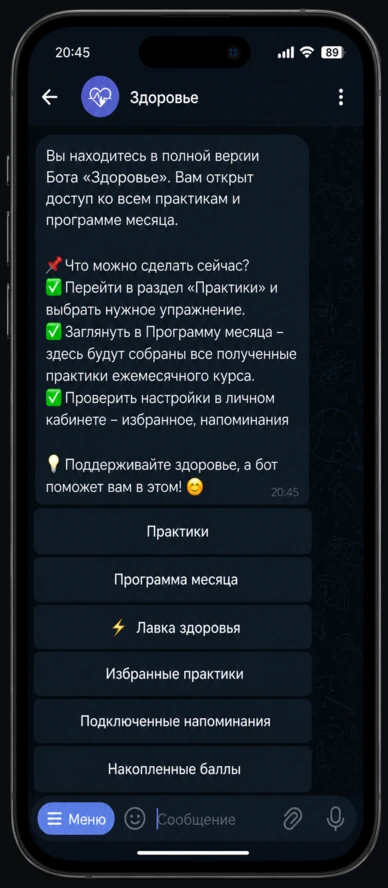
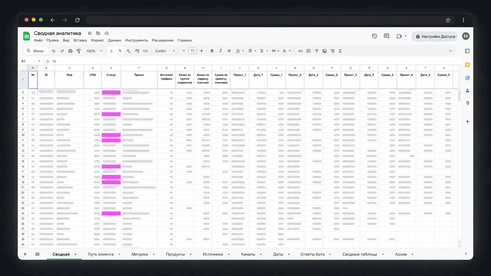

Автоматизированная инфраструктура продуктов для эксперта в нише здоровья
Собрала систему из клубного бота, закрытых программ, рассылок, оплат, доступов, напоминаний и метрик. Проект получил не один бот, а связанную продуктовую инфраструктуру, которую можно обновлять, продавать повторно и анализировать.
В целях конфиденциальности название проекта изменено. Рабочая версия доступна для ознакомления по запросу.

Задача была шире, чем «собрать бота»
У клиента были экспертные материалы, аудитория и несколько продуктовых направлений. Но процессы держались на ручном ведении: доступы выдавались вручную, программы велись без автоматизации, рассылки и напоминания не были связаны в единый клиентский путь, а данные по продуктам, оплатам и переходам не собирались в общую систему.
Моя задача была выстроить инфраструктуру, в которой продукты можно запускать, обновлять, продавать повторно, связывать между собой и анализировать без ручной пересборки каждого процесса с нуля.
Эксперт в нише здоровья и телесных практик
Практики, закрытые программы, комьюнити, повторные продукты
Telegram, BotHunter, позже VK
Продуктовая архитектура, клиентский путь, сценарии и автоматизация, участие в запусках, доступы и оплаты, метрики, анализ и прогнозы
Как изменилась архитектура проекта
Из ручного управления в связанную систему
До работы процессы держались на ручном управлении эксперта: каждый новый участник добавлял операционную нагрузку, данные не собирались в единую систему, а повторные касания зависели от ручного контроля. После внедрения появилась инфраструктура, где пользователь движется по сценарию автоматически, а эксперт видит метрики и управляет продуктом, а не рутиной.
Что изменилось после внедрения
Появилась система, в которой продукты можно обновлять, продавать повторно и связывать между собой. Клуб, программы, рассылки, оплаты, доступы и метрики работают не отдельно, а как элементы одной продуктовой экосистемы.
Часть операционной нагрузки перешла в систему. Бот выдаёт материалы, открывает доступы, ведёт по этапам, напоминает, собирает ответы, запускает рассылки и фиксирует данные.
Появился понятный путь внутри продуктов: демо-доступ, практики, полная версия клуба, программа месяца, напоминания, рассылки и переходы к следующим продуктам.
Хотите такую систему для своего клуба или экспертного продукта?
Я помогу превратить методику, клуб или онлайн-программу в цифровую инфраструктуру: с ботом, доступами, оплатами, рассылками, напоминаниями, клиентским путём и метриками.
Обсудить проект в TelegramКак работает клиентский путь внутри инфраструктуры
Система проводит пользователя от первого знакомства до повторных касаний и следующего продукта.
Пользователь может войти в экосистему через демо-доступ, попробовать формат, перейти в полную версию клуба, участвовать в программе месяца, получать напоминания и рассылки, а затем переходить в следующий продукт. Для проекта это означает не просто выдачу материалов, а управляемый клиентский путь с повторными касаниями, переходами между продуктами и аналитикой по всей системе.
- 1Демо-доступЗнакомство без обязательств
- 2Бесплатные практикиПроба формата, снижение барьера
- 3Полная версия клубаПереход в основной продукт
- 4Программа месяцаРегулярное участие и удержание
- 5Напоминания и рассылкиВозврат в практики, поддержка внимания
- 6Закрытая программаСледующий продукт в экосистеме
- 7Повторные касанияВозврат в клуб или переход к новому
Метрики фиксируют каждый переход: от демо до повторной покупки
Что было собрано в проекте
Клубный бот
Постоянный продукт с демо-доступом, полной версией, программой месяца, библиотекой 20+ практик, напоминаниями, оплатами, доступами и рассылками.
Закрытые программы
2 самостоятельные программы в ботах, каждая примерно на 2 месяца прохождения. Внутри: этапы, материалы, практики, последовательная выдача и сопровождение.
Рассылки и возврат
Автоматические касания для участников клуба, покупателей и пользователей, которые переходят между продуктами. Рассылки помогают возвращать внимание и вести к следующему шагу.
Оплаты и доступы
Логика демо-версии, полной версии, закрытых продуктов и выдачи материалов. Пользователь получает нужный уровень доступа без ручной проверки каждого шага.
Анкеты и напоминания
Опросы, подборки практик под запрос пользователя, напоминания и сценарии возвращения в продукт.
Метрики
Система сбора данных по продуктам, оплатам, переходам между продуктами, повторным покупкам, LTV и активности пользователей.
Метрики не ради метрик, а ради управления продуктом
Отдельно была собрана система метрик по ботам и продуктам. Она позволяет смотреть не только на отдельные оплаты, а на всю продуктовую экосистему: кто покупает, что покупает дальше, где возвращается, какие продукты связаны между собой и как меняется ценность клиента во времени.
В публичной версии кейса показана структура системы и логика аналитики. Внутренние данные проекта, включая финансовые показатели, пользовательские данные и детализацию оплат, не публикуются.

В публичной версии данные обезличеныМоя роль в проекте
Я отвечала за продуктовую архитектуру, клиентский путь, сценарии ботов, техническую сборку на BotHunter, механику доступов и оплат, анкеты, напоминания, рассылки, переходы между продуктами и систему метрик.
Контент практик и экспертная методология были на стороне клиента. Моя задача: превратить экспертные материалы и продукты в работающую цифровую инфраструктуру, где пользователь понимает следующий шаг, а проект может управлять продажами, возвратами и повторными касаниями.
Итог проекта
В результате у проекта появилась инфраструктура, в которой экспертные продукты можно запускать, обновлять, продавать повторно, анализировать и связывать между собой.
Боты стали не отдельными техническими инструментами, а частью продуктовой системы: клуб, закрытые программы, оплаты, доступы, рассылки, анкеты, напоминания, комьюнити и метрики работают в одной связке.
Для пользователя это даёт понятный путь внутри продуктов. Для эксперта: снижение ручной нагрузки и возможность превращать методику в повторяемые цифровые продукты. Для проекта: данные по клиентскому пути, повторным покупкам и переходам между продуктами.
Отзыв заказчика
«На данный момент у меня работает постоянный клуб на основе чат-бота, созданного Марией. Ежемесячно его основная программа обновляется. Также работают 2 чат-бота с законченными программами».
Для каких проектов подходит такая инфраструктура
Такой формат нужен экспертам, у которых уже есть методика, клуб, онлайн-программа, база практик или несколько продуктов, но процессы держатся на ручном ведении и разрозненных инструментах.
Я могу помочь собрать систему, в которой пользователь понимает следующий шаг, материалы выдаются автоматически, доступы открываются без ручного контроля, рассылки возвращают в продукт, а проект видит клиентский путь и повторные покупки.
Хотите собрать клуб, бот или инфраструктуру вокруг экспертного продукта?
Напишите мне в Telegram. Я посмотрю, как сейчас устроен ваш клиентский путь, где пользователи теряются, что можно автоматизировать и какой формат системы подойдёт под ваш продукт.
Начать можно с аудита текущего пути или с проектирования структуры будущего бота.